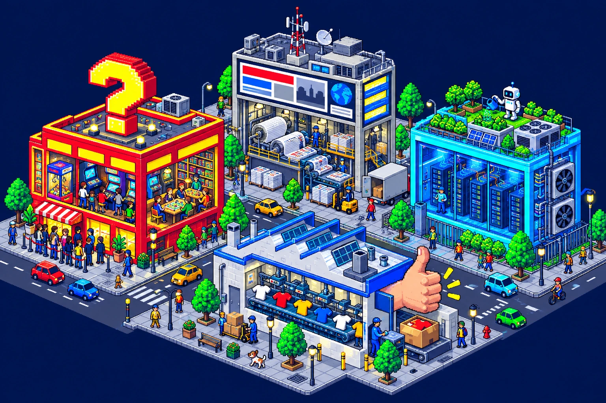

Desarrollador Full Stack. Construyo y pongo en marcha software con un equipo de agentes de IA.
En mi empresa metí un LLM en el ERP con borrador y aprobación humana. Por mi cuenta he puesto en internet Adivinadle y Wardux. Esta es la manzana: pasa por encima de cada edificio.
Marbella, España. En remoto o presencial.

Pasa por encima de los cuadrados amarillosDesliza la ciudad y toca los cuadrados amarillos
Nueve juegos diarios. Astro, Laravel y pruebas en cada cambio.
La torre de prensaWarduxNoticias y guías con dos agentes que se revisan entre sí.
El robot del tejadoEquipo de agentesEl sistema con el que construyo todo lo demás. Público en GitHub.
El centro de datosMi servidorAutoalojado y mantenido por mí, con copias en tres capas.
La fábricaLLM en el ERPIA con aprobación humana en una empresa de uniformes.